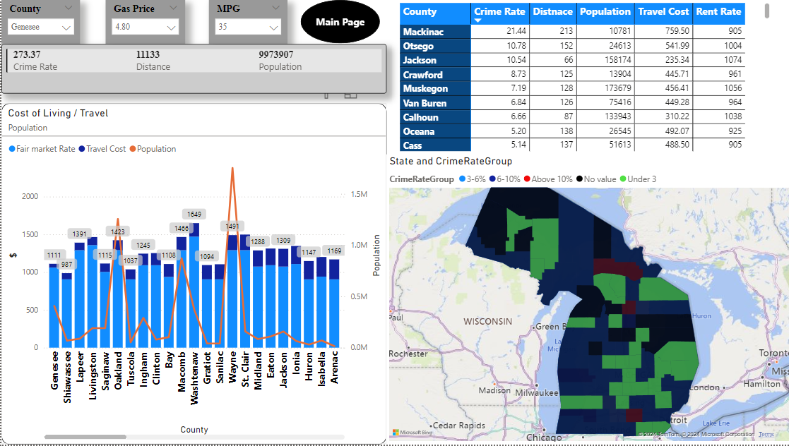
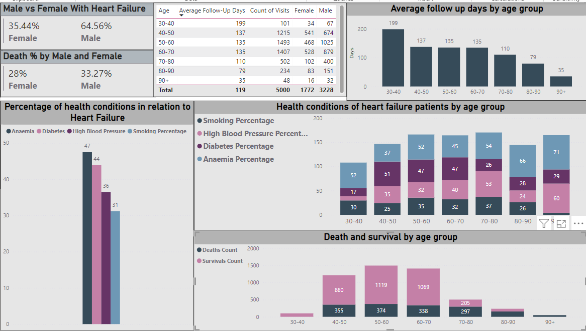
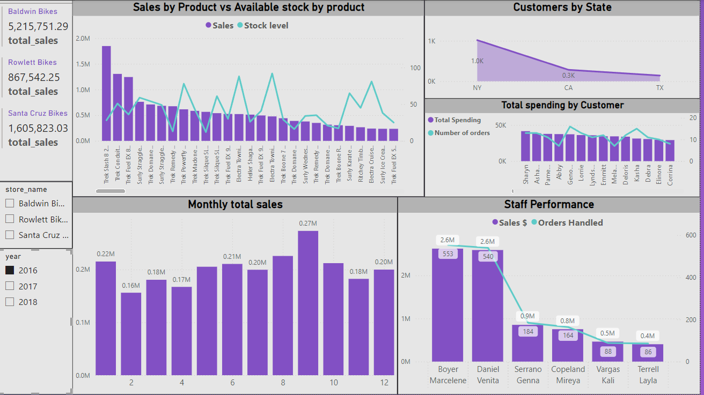

This project involved gathering and analyzing data for all Michigan counties,
including locations, distances between counties, crime rates, and average rent rates.

In this project, I used the queries from the Comprehensive Michigan Counties Analysis to create a Power BI dashboard. This interactive dashboard allows users to:
Filter by their job location. Input current gas prices and their car’s MPG.
Generate detailed reports comparing the cost of living across Michigan counties.
This tool enables users to make informed decisions about where to live and work based on
comprehensive data on distances, crime rates, and average rent rates.

In this project, I utilized a dataset containing housing information in Nashville to
demonstrate my data cleaning and transformation skills. I reassigned data types,
standardized data using CASE statements, and employed updates, alters, and inserts to refine the dataset.
Inner joins were used to determine relationships between rows, and duplicates were deleted using a WITH clause.
I also broke out address values separated by commas with the PARSENAME function and removed all unnecessary columns
to ensure a clean and organized final dataset.
In this project, I utilized SQL to perform a detailed analysis of heart failure patient data.
The queries involved data cleaning, transformation, and summarization to derive insights into patient demographics,
medical history, and clinical outcomes. Key metrics such as age, creatinine phosphokinase levels, ejection fraction,
and follow-up times were analyzed to understand their impact on patient mortality and health conditions.
The results provide valuable information for healthcare professionals to make data-driven decisions..

In this project, I utilized Power BI and DAX to perform a comprehensive analysis of heart failure
patient data. By creating relationships from raw data and using DAX for data transformation and
summarization, I developed an interactive dashboard that provides insights into patient demographics,
medical history, and clinical outcomes.
This SQL project aims to enhance data organization and efficiency for a bike store through targeted queries
and table restructuring. By streamlining datasets and optimizing data retrieval processes,
the project aims to provide a simplified and more cohesive database structure, enabling improved analytics and
reporting capabilities.

The Bike Store Insights Dashboard in Power BI offers comprehensive visualizations and analytics derived
from consolidated data sources. With interactive features such as slicers and dynamic charts,
this dashboard empowers stakeholders to explore sales performance, inventory levels, and staff productivity
effortlessly. By providing actionable insights at a glance, the dashboard facilitates informed decision-making
and drives business growth for the bike store.